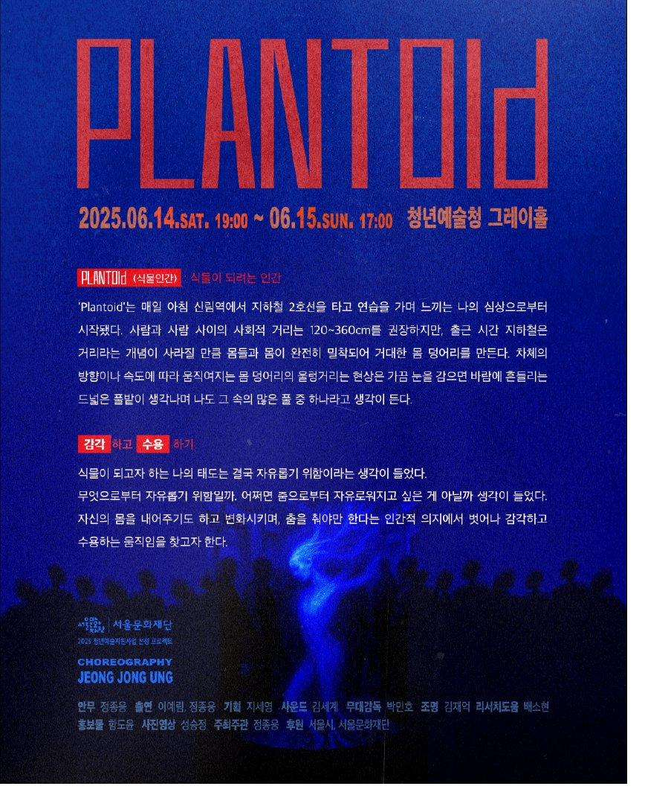
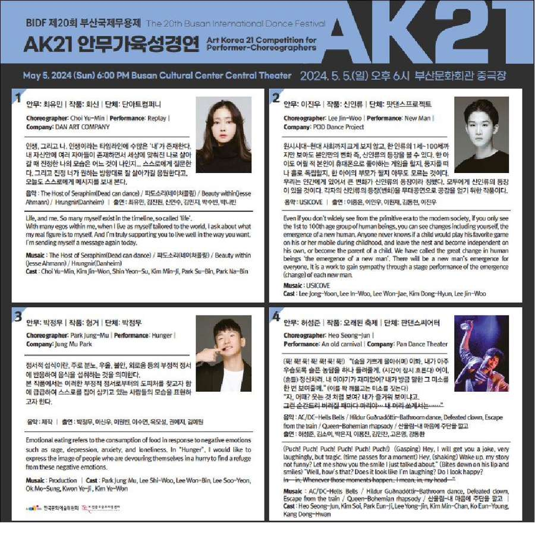

03
아카이브


2025 〈동행〉 기획 및 출연

2025 서울문화재단 청년예술지원사업 정종웅 기획공연 〈Plantoid〉 기획PD

2025 서울문화재단 청년예술지원사업 정종웅 기획공연 〈Plantoid〉 기획PD

2025 CRESIDANCE SEOUL DANCE WORKSHOP 멘토 초청 언리쉬댄스컴퍼니 기획PD 및 통역

2025 CRESIDANCE SEOUL DANCE WORKSHOP 멘토 초청 언리쉬댄스컴퍼니 기획PD 및 통역